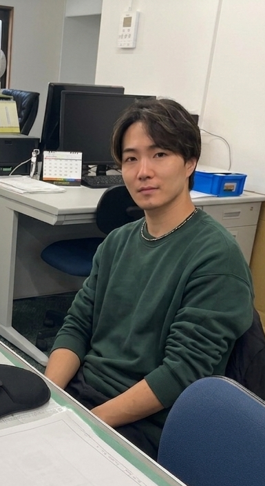
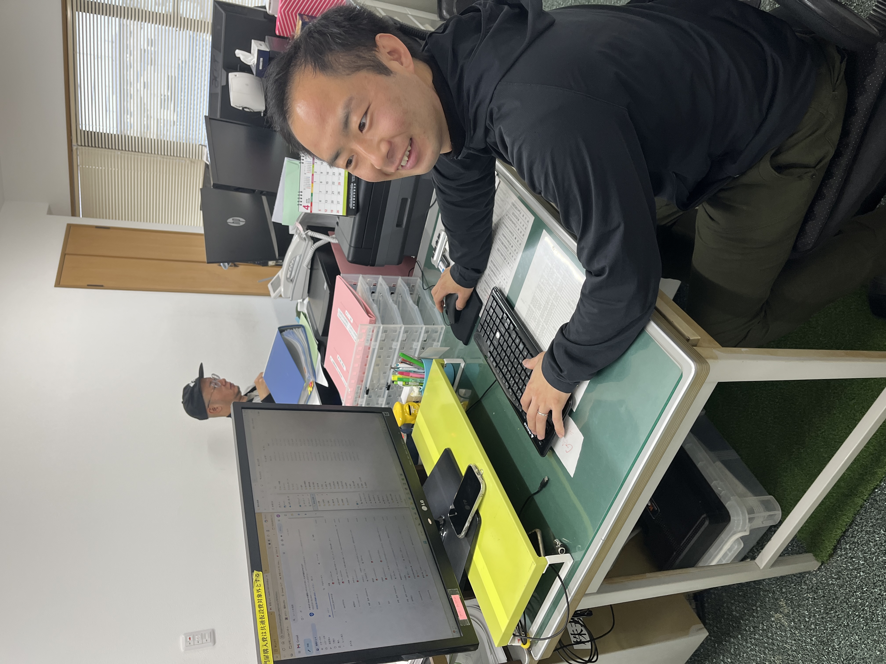

一緒に働きませんか
造園・土木・建設のプロフェッショナルとして、
地域の未来を一緒につくりましょう。



前田グループで、緑とともに働きませんか

前職は銀行員だったそうですね。転職のきっかけは？
銀行の仕事も充実していましたが、もっと体を動かして、自然に関わる仕事がしたいという気持ちがずっとありました。前田グループに入ってからは、毎日外で緑に触れながら働けて、前職と比べてストレスが圧倒的に減りました。身体を動かすと気持ちいいんですよ（笑）。
仕事の中で特に楽しいことは？
剪定がすごく面白いです。同じ木でも、担当する人によって仕上がりが全然変わる。高い木の剪定は正直怖さもありますが、それだけにやりがいがあります。公園の新設工事に携わったときは本当に嬉しかった。完成した公園がずっと残って、子供たちが遊んでいるのを見ると、「この仕事をしていてよかった」と心から思います。
やりがいを感じるのはどんな時ですか？
公園の新設工事に携わった時は本当に嬉しかった。完成した公園がずっと残って、子供たちが遊んでいる姿を見ると、「この仕事をしていてよかった」と心から思います。自分たちが作ったものが、何十年も地域の人々に愛され続ける。それが造園の仕事の魅力だと思います。
取得した資格を教えてください
入社後、会社の支援制度を利用して様々な資格を取得しました。振動工具、高所作業車、玉掛、チェーンソー、街路樹剪定枝、小型移動式クレーンなど。未経験からのスタートでしたが、先輩方の丁寧な指導と、資格取得支援のおかげで、着実にステップアップできています。
現在の仕事の状況を教えてください。
今は大阪市の大きな工事で現場代理人を任せてもらっています。入社5年で現場代理人になれたのは、会社が若い人にどんどん機会を与えてくれるからだと思います。最近は結婚もして、10日間の新婚旅行にも行かせてもらいました。プライベートも充実しています。
今後の目標を聞かせてください。
今年は造園施工管理技士1級の取得を目指しています。会社も資格取得をサポートしてくれるので、しっかり勉強したい。これからもっと新しい仲間を迎えて、チームとして会社を大きくしていきたいですね。未経験でも絶対大丈夫なので、ぜひ一緒に働きましょう！
年次昇給あり。ボーナス年2回支給。頑張りはしっかり評価します。
週休二日制。有給休暇取得推奨。年末年始・夏季休暇あり。
造園施工管理技士など、業務に必要な資格の取得を全面的にサポート。
健康保険・厚生年金・雇用保険・労災保険完備。安心して働けます。
通勤にかかる費用を支給。マイカー通勤も可能です。
年1回の社員旅行を実施。社員同士の交流を深める機会を大切にしています。
作業に必要な服装や装備は会社が貸与。初期費用の心配なし。
グループ内でのキャリアパスも豊富。将来の可能性が広がります。
基礎研修を通じて、造園・土木の基本を学びます。先輩社員のサポートのもと、実践的なスキルを習得。
現場の中核メンバーとして活躍。2級造園施工管理技士などの資格取得を目指します。
現場のリーダーとして、工事全体を管理。1級造園施工管理技士などの上位資格にチャレンジ。
管理職や専門職として、会社の中核を担う。グループ内での異動や新しい挑戦も可能です。
造園・土木・建設のプロフェッショナルとして、
地域の未来を一緒につくりましょう。
